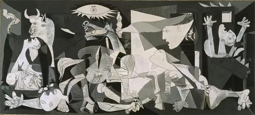
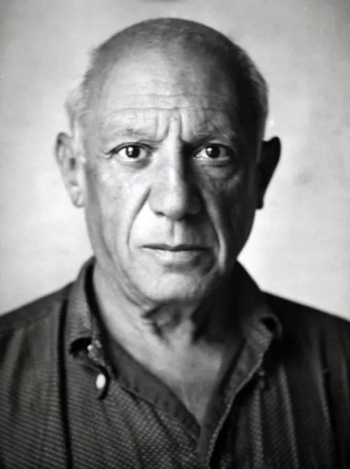
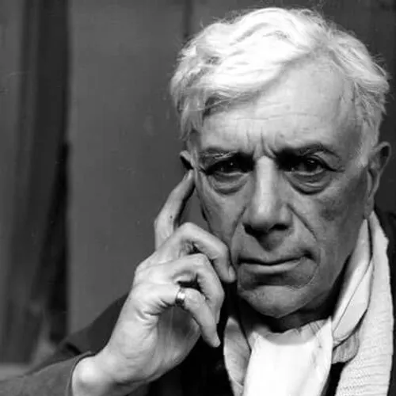
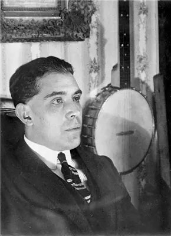
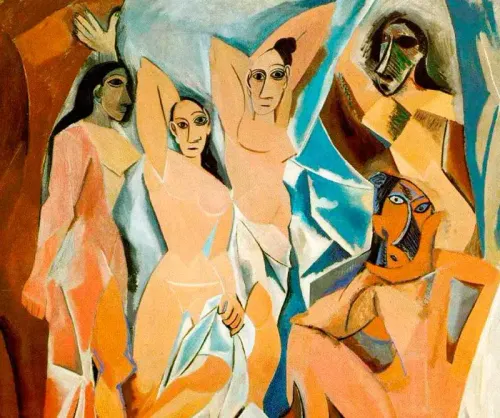
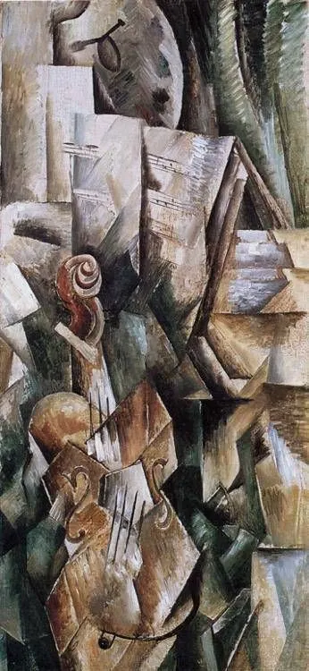
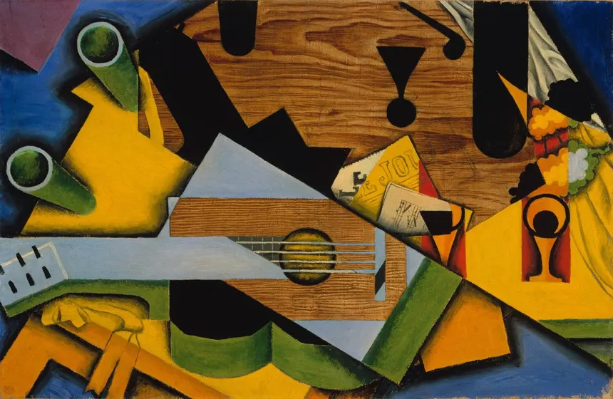

Cubismo

El Cubismo fue un movimiento artístico que surgió a principios del siglo XX, principalmente en Francia. Se caracterizó por transformar la representación tradicional de los objetos y las personas mediante formas geométricas, fragmentación y diferentes perspectivas dentro de una misma composición.
Los artistas cubistas dejaron de representar los objetos desde un único punto de vista. En lugar de ello, mostraban distintas partes de un objeto simultáneamente, creando imágenes que podían parecer abstractas y descompuestas. Este movimiento fue uno de los más importantes para el desarrollo del arte moderno.
Características del Cubismo
-
Formas geométricas
- Uso de cuadrados, triángulos y otras figuras.
- Transformación de objetos en formas geométricas.
- Reducción de elementos a estructuras simples.
-
Múltiples perspectivas
- Representación de diferentes puntos de vista.
- Mostrar varias partes de un objeto al mismo tiempo.
- Abandono de la perspectiva tradicional única.
-
Fragmentación
- División de objetos y figuras.
- Composición mediante planos geométricos.
- Reorganización de los elementos visuales.
-
Uso limitado del color
- Predominio de tonos grises y marrones en el Cubismo analítico.
- Colores sobrios para destacar las formas.
- Mayor variedad cromática en etapas posteriores.
-
Abstracción y simplificación
- Reducción de detalles realistas.
- Transformación de figuras reconocibles.
- Exploración de nuevas formas de representación.
-
Collage
- Incorporación de materiales reales a las obras.
- Uso de papel, periódicos y otros elementos.
- Combinación de pintura y materiales diferentes.
Artistas representativos

Pablo Picasso (1881–1973)
Pablo Picasso fue un artista español y uno de los creadores del Cubismo. Su trabajo transformó profundamente la pintura del siglo XX mediante la experimentación con formas, perspectivas y estilos. Entre sus obras más conocidas se encuentran Las señoritas de Avignon y Guernica, en las que explora nuevas maneras de representar la realidad y expresar ideas.

Georges Braque (1882–1963)
Georges Braque fue un pintor francés que trabajó junto con Pablo Picasso en el desarrollo del Cubismo. Sus obras se caracterizan por la fragmentación de objetos, el uso de formas geométricas y la experimentación con diferentes perspectivas. También fue importante en el desarrollo del collage dentro del arte cubista.

Juan Gris (1887–1927)
Juan Gris fue un pintor español que se convirtió en uno de los principales representantes del Cubismo. Su estilo se distingue por composiciones organizadas, formas geométricas claras y una combinación equilibrada de colores. Se especializó en bodegones y representaciones de objetos cotidianos transformados mediante el lenguaje cubista.
Obras destacadas

Las señoritas de Avignon - Pablo Picasso
Esta pintura representa a cinco figuras femeninas mediante formas angulares y una composición fragmentada. Es considerada una obra fundamental en el desarrollo del Cubismo y en la transformación del arte moderno.

Violín y paleta - Georges Braque
En esta obra Braque representa objetos mediante formas geométricas y planos fragmentados. La composición muestra cómo los objetos pueden ser reinterpretados desde diferentes perspectivas, alejándose de la representación tradicional.

Bodegón con guitarra - Juan Gris
Esta obra muestra objetos cotidianos reorganizados mediante formas geométricas. Juan Gris utiliza planos, colores y estructuras para construir una composición equilibrada y característica del Cubismo.